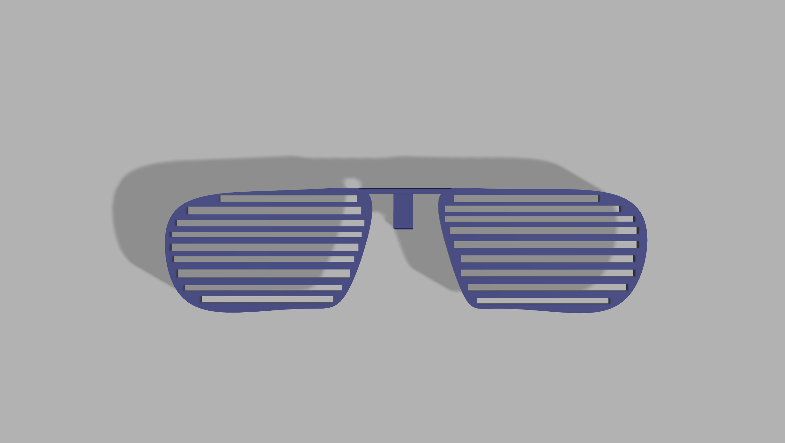
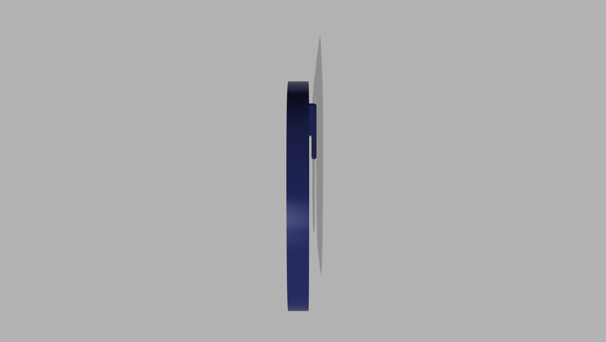
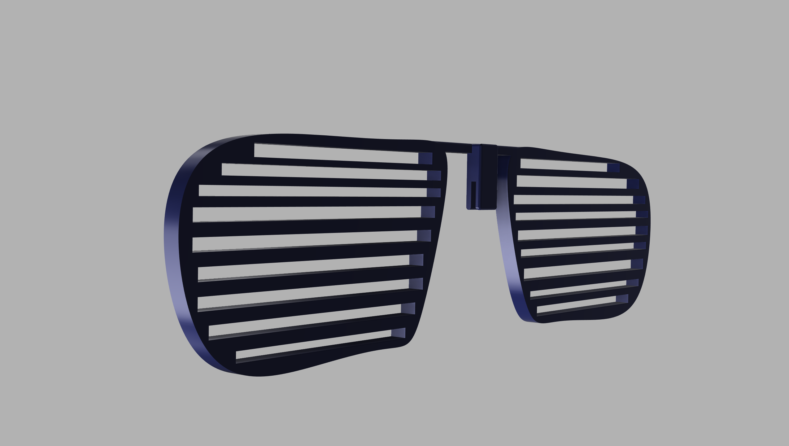
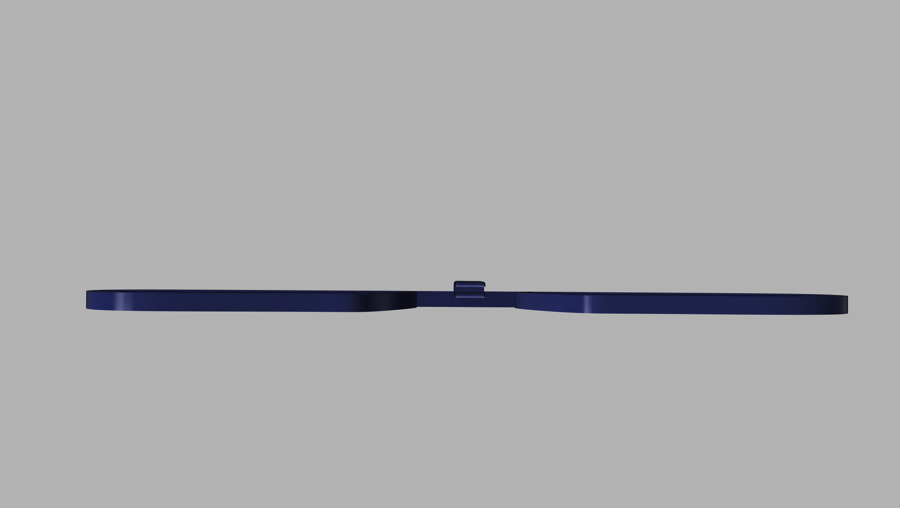

Projects and Blogs
Fabricating For Function Blog Post
My product should help people who want to wear sunglasses but have bulky glasses on already. It should be a shade that wraps around someones prescription glasses
Here is the model for my produc. It is a basic shader that doesnt necessarily conform to a specific eyeglass shape, it just acts as a universal add on to any glasses pair. Each lens width is approximately 40 mm. the bridge is 2 mm wide. Strategic decision to do shutter style for printing practicality.
   Made with github pages
view the code for this this website at GitHub